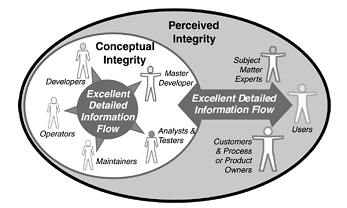

Lean Toolkit for Software Development¶
Lean has huge impact on current software industry. No matter your team adopts Devops, Scrum, Kanban or other Agile methodologies, you can find impact from Lean methodology. Even though Lean was invented decades ago, the concepts are still shining and toolkit are still very useful.
Identify Bottleneck¶
- Any improvements made anywhere besides the bottleneck are an illusion.
- – Mary Poppendieck
Your software, team, organization’s performance is determined by the bottleneck. Identify the bottleneck first in your optimization task, normally identifying bottleneck is the most difficult part.
Build Quality in¶
- The best way to develop low-cost, high-quality software is to write less code.
- – Mary Poppendieck
Less code does not only mean to avoid unnecessary features, but also cleaner code and reuse as much as possible.
Quality means realization of purpose or fitness for use rather than conformance to requirements.
Establish Information Flow¶
Perceived integrity: is affected by the customer’s whole experience of a system.
Conceptual integrity: means that a system’s central concepts work together as a smooth, cohesive whole.
Perceived integrity is a reflection of the integrity of the information flow from customers and users to developers. Conceptual integrity is a reflection of the integrity of the upstream/downstream technical information flow
The way to build a system with high perceived and conceptual integrity is to have excellent information flows both from customer to development team and between the upstream and downstream processes of the development team.
- Smaller systems should be developed by a single team that has immediate access to the people who will judge the system’s integrity. The team should use short iterations and show each iteration to a broad range of people who will know integrity when they see it, so they can make course corrections based on feedback.
- Customer tests provide excellent customer–developer communication.
- Complex system should be represented using a language and a set of models that the customers understand and the programmers can use without intervening refinement.
- Large systems should have a master developer who has deep customer understanding and excellent technical credentials, and whose role is to facilitate the design as it emerges, representing the customer’s interests to the developers.
- Suppose a developer has a conversation with a customer about details of a feature. The conversation should not be considered complete until it is expressed as a customer test.
- By documenting the design in tests, developers can write code with a clear understanding of exactly what it is supposed to do. This is a good way to refine thinking and help developers write code with conceptual integrity.
Decide as Late as Possible¶
Postpone the decision as much as possible, no matter in your requirement, design, architecture, or implementation work.
Options thinking is an important tool in software development as long as it is accompanied by recognition that options are not free and it takes expertise to know which options to keep open.
Empower Front-line¶
Lean thinking capitalizes on the intelligence of front-line workers, believing that they are the ones who should determine and continually improve the way they do their jobs.
We believe that the critical factor in motivation is not measurement, but empowerment: moving decisions to the lowest possible level in an organization while developing the capacity of those people to make decisions wisely.
The way to be sure that everything is measured is by aggregation, not disaggregation. That is, move the measurement one level up, not one level down.
Stay Cool¶
Transferring practices from one environment to another is often a mistake. Instead, one must understand the fundamental principles behind practices and transform those principles into new practices for a new environment.
Today’s organizations are littered with failed improvement programs, whether they go by the name CMM, ISO9000, TQM, Six Sigma, or even Lean. It is notoriously difficult to implement successful improvement programs, and even more difficult to sustain them over time.
Stay cool with the hot process/technology, there is no ‘silver bullet’ in the world. You have to fully understand the pros and cons, whether it fits you and your organization, and then adopt reasonable actions accordingly.
Written by Binwei@Oslo